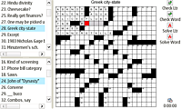
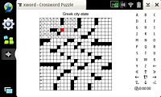

xword is a crossword puzzle program for the Nokia Internet Tablet which can read Across Lite .puz files. It is written in python using pyGTK. It is based on the original Xword program written by Bill McCloskey. The NIT version fixes a few bugs in the original code and adds some functionality (e.g. built-in keyboard) to make the program more usable on the NIT.
Before you go any farther, you should be aware of the following caveats.
To install xword on your N8x0, you need to install python2.5 and python2.5-gtk. These are available in the maemo extras repository. Go into the Application Manager, select the menu "Tools->Application catalog..." and verify that "maemo Extras" is not grayed out. If it is, select "maemo Extras", click the "Edit" button, and uncheck the "Disabled" checkbox. Then click "OK", and then "Close". Let the Applciation Manager reread the catalog list.
Now, install the latest vesion of the xword.deb file. If the program does not automatically install, you may need to open an xterm and install everything manually as root. So SAVE the latest xword.deb to your NIT and then run the following commands in a terminal.
sudo gainroot
sudo apt-get install python2.5 python2.5-gtk2
dpkg -i /home/user/xword-x.x.x.deb
Be sure to change the "xword-x.x.x.deb" file to the correct file name.
See also the xword for maemo project page.
The xword program will appear in your program menu somewhere, probably "Extras". The first time you start xword, you will need to open a ".puz" crossword puzzle. The ".puz" format was created for Across Lite. Puzzles in this format can be found around the net. HERE is a free "classic" puzzle from the New York Times. The Houston Chronicle also has a selection of free puzzles.
In general, tap the box you want to move to. That box will appear in red. The rest of that word will appear in gray to indicate the direction of the word. The clue for that word will appear above the puzzle. Tap the box again to change word direction from horizontal to vertical (or back). Type in letters to fill in the word.
File
- Open - Open a .puz file
- Save - Save the state of the current puzzle. This is not strictly necessary since the state of the puzzle gets saved automatically when you exit the program.
- Properties... - Show the properties of the current puzzle. This includes the title, author, and copyright information.
- Close - Close the current puzzle.
- Quit - Exit the xword application.
Puzzle
- Check Word - Check the current word for correctness. If the word is correct, you will be shown a popup window saying "No mistakes found". Otherwise, you will be shown a popup window saying "Incorrect" and the incorrect letters will be marked with a big "X" through them as well as a small black triangle in the corner to keep track of the letters you needed help with.
- Check Puzzle - Perform "Check Word" on all currently filled in words. Thus, the puzzle does not need to be complete to check it.
- Solve Word - Fill in the correct letters for the current word. The letters that get filled in by the application will be marked with a small red triangle in the corner to keep track of the letters you needed help with.
- Clear Puzzle - Completely clear the current puzzle and start from scratch.
Preferences
- Skip Filled - Toggle a checkmark for if you want to skip boxes where you have already filled in a letter. This can reduce the number of letters you have to type in.
- Set Min Box Size - Bring up a dialog allowing you to set the minimum box size of each letter square. The default size is 20 which allows a 21x21 puzzle to fit fullscreen without scrollbars. You can set this value between 12 and 40 inclusive.
- Toolbar Layout - Set the location of the "toolbar". The toolbar can be turned off entirely to maximize screen real estate. You can show the "Check" buttons, which duplicate the functionality of the "Puzzle" menu above AND provide a clock timer. Or you can show the "Keyboard" which allows you to enter letters and duplicates some functionality of the hardware buttons. The toolbar can be shown on the left or right side of the screen.
- Word List Layout - The "word list" is the list of horizontal and vertical clues. The default is to show only the puzzle. Alternatively, you can show the word list on the left, right, top, bottom, or some combination of these.
Help
- About - Shows information about the xword application.
For convenience, the harware buttons on the NIT duplicate some of the functions on the on-screen keyboard. The table below shows the hardware buttons (with the equivalent key on a "standard" computer) and their function.
| NIT button (Standard key) | Crossword function |
|---|---|
| Zoom - (F8) | Move cursor to previous word |
| Fullscreen (F6) | Toggle between windowed mode and fullscreen |
| Zoom + (F7) | Move cursor to next word |
| D-pad center button (Return) | Swap direction (horizontal <-> vertical) |
| D-pad up/down/left/right (Arrow keys) | Move 1 box in that direction, or swap direction |
| Escape/Go back (Esc) | Check current word for correctness |
The on-screen keyboard allows you to enter letters for those devices without a hardware keyboard (e.g. the N800). In addition to letters, there are some special buttons near the bottom as shown in the image below.

 Windowed view with keyboard on
right
Windowed view with keyboard on
right
Fullscreen view with keyboard on right
 Fullscreen view with word list on left and keyboard on right
 Windowed view with checks on left
 Windowed view with minimum box
size set to 14
Windowed view with minimum box
size set to 14
 Windowed view with minimum box
size set to 40
Windowed view with minimum box
size set to 40
 "File->Properties..." popup
box
"File->Properties..." popup
box
So you want to solve crosswords on your home computer? Well, you could simply download Across Lite for your platform. But you can also use the same xword program that runs on your NIT on any computer that supports python, pyGTK, and subversion.
Follow the installation instructions appropriate for your platform for python, pyGTK, and subversion. Then download the latest xword code from the maemo garage using the following command.
svn checkout https://garage.maemo.org/svn/xword/trunk/root/
Change into the newly created "usr/bin/" directory and run the "xword" program you find there. For Windows, you may need to rename "xword" to "xword.py" to be able to run it by double-clicking.
{kind=link}
{kind=link}
{kind=link}